What is Cytoscape?
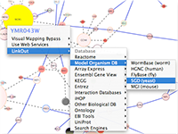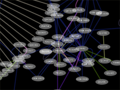Cytoscape is an open source bioinformatics software platform for visualizing molecular interaction networks and biological pathways and integrating these networks with annotations, gene expression profiles and other state data. Although Cytoscape was originally designed for biological research, now it is a general platform for complex network analysis and visualization. Cytoscape core distribution provides a basic set of features for data integration and visualization. Additional features are available as plugins. Plugins are available for network and molecular profiling analyses, new layouts, additional file format support, scripting, and connection with databases. Plugins may be developed by anyone using the Cytoscape open API based on Java™ technology and plugin community development is encouraged. Most of the plugins are freely available.
Supports Many Standards
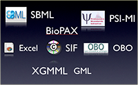Cytoscape supports a lot of standard network and annotation file formats including: SIF (Simple Interaction Format), GML, XGMML, BioPAX, PSI-MI, SBML, OBO, and Gene Association. Delimited text files and MS Excel™ Workbook are also supported and you can import data files, such as expression profiles or GO annotations, generated by other applications or spreadsheet programs. Using this feature, you can load and save arbitrary attributes on nodes, edges, and networks. For example, input a set of custom annotation terms for your proteins, create a set of confidence values for your protein-protein interactions.
Web Service Clients
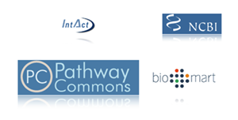Cytoscape works as a web service client. This means Cytoscape can directly connect to the external public databases and imports network and annotation data. Currently, Pathway Commons, IntAct, BioMart, NCBI Entrez Gene, and PICR are supported. And we continue to develop new service clients for popular databases.
Interoperability

Since Cytoscape supports import/export standard file formats, you can easily put Cytoscape into your workflow. For example, if you have a network data generated by igraph or Bioconductor, Cytoscape can load the file as a text table and you can export it in PSI-MI format for other bioinformatics tools or your own programs/scripts.
Session File
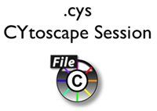You can save your work by a single click. All of settings, data files, and visualizations are packed in a session file. It is called Cytoscape Session (.cys) file. Cytoscape Session file includes networks, attributes (for node/edge/network), Desktop states (selected/hidden nodes and edges, window sizes), Properties, some plugin states, and Visual Styles.
VizMapper™
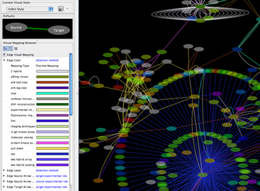 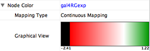Customize network data display using powerful Visual Styles. View a superposition of gene expression ratios and p-values on the network. Expression data can be mapped to node color, label, border thickness, or border color, etc. according to user-configurable colors and visualization schemes.
Image Export

You can export networks as publishiable-quality images. Supports PDF, EPS, SVG, PNG, JPEG, and BMP files. Vector images (PDF and EPS) can be modified by other application such as Adobe Illustrator for further enhancements.
Layout
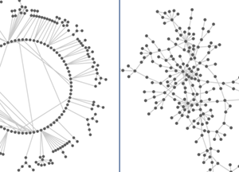Layout networks in two dimensions. A variety of layout algorithms are available, including cyclic, tree, force-directed, edge-weight, and yFiles Organic layouts. You can also use Manual Layout tools similar to other graphics application user interface.
Browsing
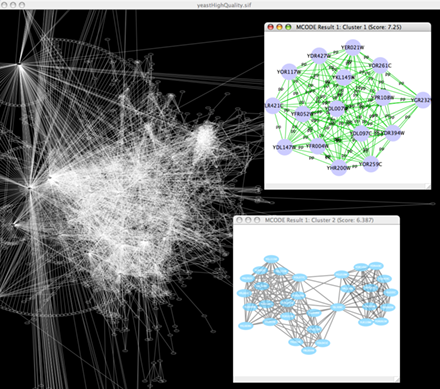Zoom in/out and pan for browsing the network. Use the network manager to easily organize multiple networks. And this structure can be saved in a session file. Use the bird's eye view to easily navigate large networks. Easily navigate large networks (100,000+ nodes and edges) by efficient rendering engine.
Search
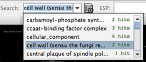 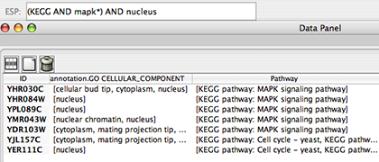Search target nodes and edges by Quick Find or Enhanced Search. Lucene Syntax is supported by Enhanced Search Plugin (ESP) for arbitrary complex queries.
Filter
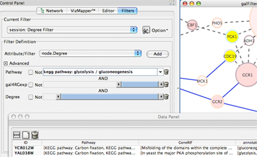Filter the network to select subsets of nodes and/or interactions based on the current data. For instance, users may select nodes involved in a threshold number of interactions, nodes that share a particular GO annotation, or nodes whose gene expression levels change significantly in one or more conditions according to p-values loaded with the gene expression data. You can create new networks from the filtering result.
Find Modules/ Clusters
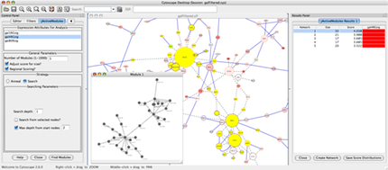 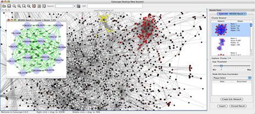Find active subnetworks/pathway modules. The network is screened against gene expression data to identify connected sets of interactions, i.e. interaction subnetworks, whose genes show particularly high levels of differential expression. The interactions contained in each subnetwork provide hypotheses for the regulatory and signaling interactions in control of the observed expression changes. Find clusters (highly interconnected regions) in any network loaded into Cytoscape. Depending on the type of network, clusters may mean different things. For instance, clusters in a protein-protein interaction network have been shown to be protein complexes and parts of pathways. Clusters in a protein similarity network represent protein families.
Plugin Manager
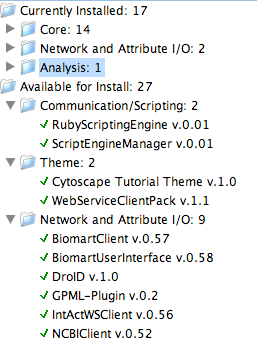Plugins available for network and molecular profile analysis. Cytoscape is a software written in Java and you can write your own plugin for data analysis/import/visualization by writing Java code. More plugins available on the plugins page. You can isntall most of the plugins by just one click from Plugin Manager.
Multilingual
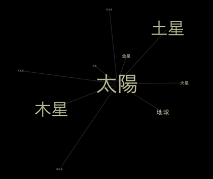You can use your language for the data files. Most of the features in Cytoscape supports languages other than English, including Eastan Asian languages using two-byte characters.
History and Future
Cytoscape was initially made public in July, 2002 (v0.8); the second release (v0.9) was in November, 2002. and v1.0 was released in March 2003. Version 1.1.1 is the last stable release for the 1.0 series. Latest version of Cytoscape is : download ( release notes ). Cytoscape Core developer team continue to work on this project and near future, we are going to release next major version, Cytoscape 3.0. It will be more modularized and scalable version of Cytoscape. This release includes server-side features. For more information about version 3.0, please visit developer's wiki page.